Three kinds of instruments, all free. Here is what they are.
A software instrument that runs inside your music program: Cubase, Ableton, FL Studio, Logic and so on. Put it on a track and play it with a MIDI keyboard, or draw the notes in.
No music program? Every plugin also comes as a standalone app. Plug in a keyboard and play.
The same instruments on Akai's standalone MPCs. They run right on the device, no computer needed.
Load them like any other MPC plugin and sequence them with your beats.
The M-VAVE FM-1 is a small, cheap keyboard synth. Its sound comes from firmware you can swap, and each mod here turns it into a completely different instrument: a drone machine, a drum computer, an arcade game you play with chords.
Don't own one? Some of them run in your browser.
VST3 for Windows and Mac, AU for Logic and GarageBand, and a standalone app.
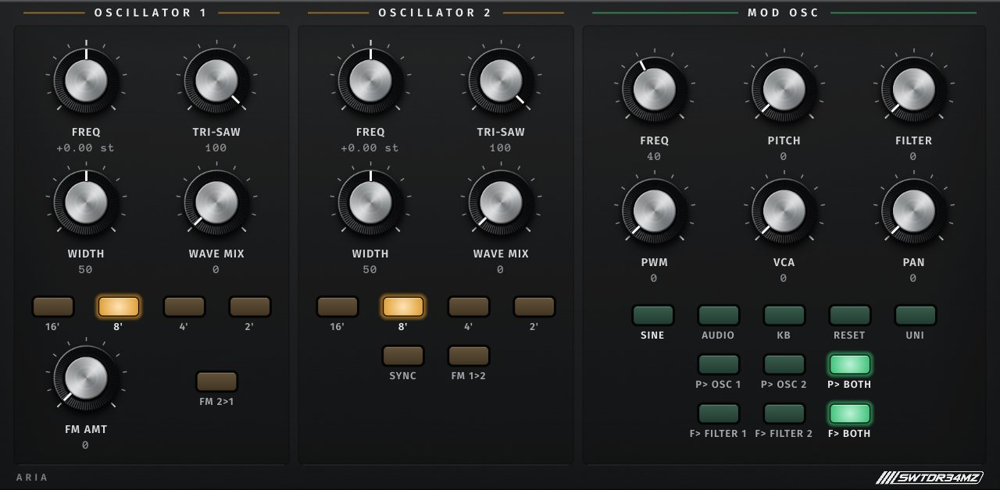
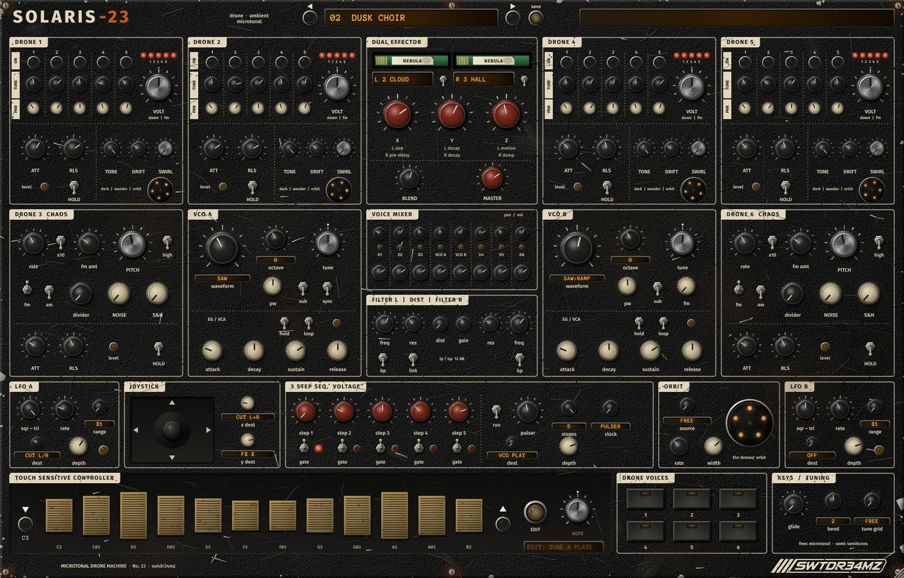
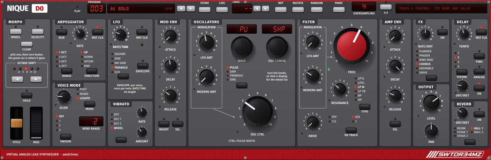
Plugins for Akai MPC standalone, built with Akai's MPC Plugin SDK.
Alternative firmwares for the M-VAVE FM-1. Some run right here in your browser.
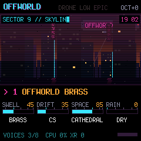
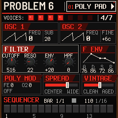
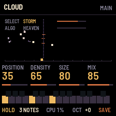
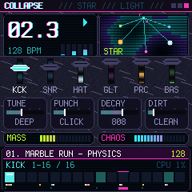
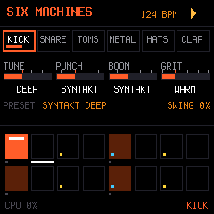
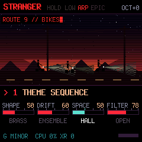
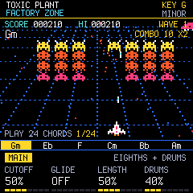
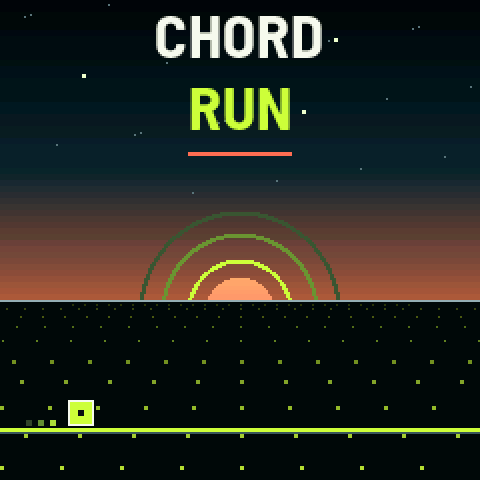
The download buttons always fetch the newest version.
.vst3 folder to C:\Program Files\Common Files\VST3\.exe is the standalone app. If SmartScreen warns, choose More info → Run anyway..vst3 goes to ~/Library/Audio/Plug-Ins/VST3/, .component (AU) to ~/Library/Audio/Plug-Ins/Components/xattr -cr followed by the file path..fwsc file.